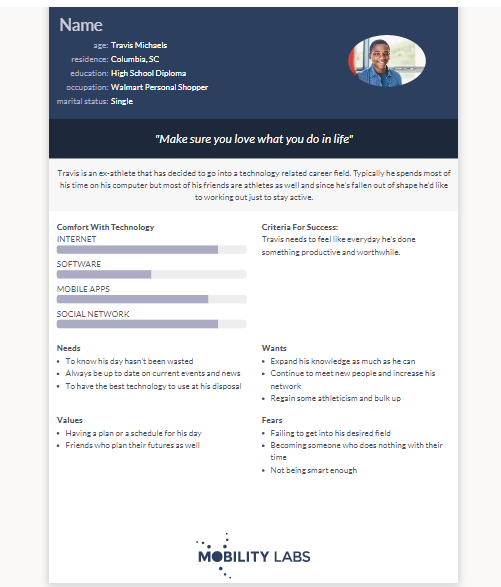

Problem Statement: Working Out: Keeping Young Users Happy and Healthy
Our users are having a challenging time getting into and/or staying motivated with their fitness routines since the global pandemic has caused massive gym shutdowns throughout the world.
Affinity Diagram: Working Out

Working together, my group and I brainstormed several ideas that we wish to implement into our workout application, such as different types of routines and ways users can customise thier workouts.
Personas: Team Vanilla Personas
Each member of our team created a persona representing a typical user for our workout application.
Storyboards: Team Vanilla Storyboards

Each member of our team created a storyboard that depicts how our personas would use our application.
Storyboards: Team Vanilla Storyboards

Each member of our team created three sketches to illustrate potential designs for our workout application. We then met over Microsoft Teams and decided on which sketch was our favorite. Our favorite sketch is displayed in the image to the left, and it is also the first sketch shown in the PDF document containing all of our sketches.
Paper Prototype: Pump-It! Workout App (Trystan Wilson)

Each memeber of our team created a paper prototype for our application and recorded a video discussing our prototype. Clikcing on the image next to this description or the title of this section will take you to my YouTube video about my paper prototype.
{kind=link}
Useability Script: Pump-It! Workout App (Trystan Wilson)
Each memeber of our team created a useability script and had two people test our prototypes. The individuals tested also gave us feedback that we will use to further enhance our application. Clicking the title of this section or the image will load a PDF containing my useability script.
Low-Fidelity Prototype

Our team worked together to create a low-fidelity prototype of our workout application. Clicking the image or the title of this section will allow you to view and interact with our prototype.
High-Fidelity Prototype

Our team modified our low-fidelity prototype in order to create a high-fidelity prototype. Clicking the image or the title of this section will allow you to view and interact with our prototype.
High-Fidelity Prototype: Pump-It! Workout App (Trystan Wilson)
Our team put the finishing touches on our prototype, making it look more professional. Then, we recorded a presentation detailing the features of our prototype. Clikcing on the image next to this description or the title of this section will take you to my YouTube video about my paper prototype.